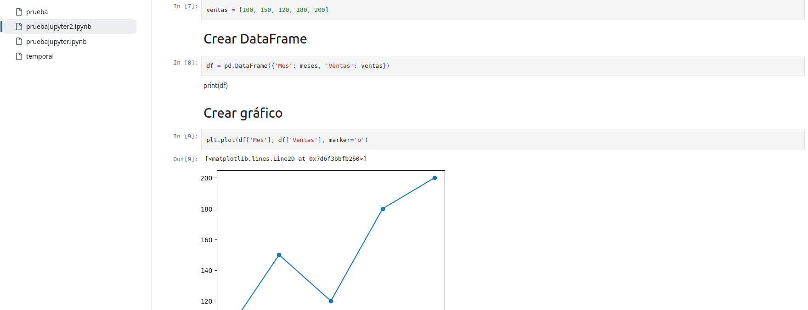

Una vez que hayas creado tu notebook con el análisis de datos (como el ejemplo del caso práctico), es importante versionarlo con Git para mantener un historial de cambios y colaborar con otros.

Ahora que hemos subido el notebook a Git, podemos gestionar sus versiones y colaborar con otros, igual que con otros archivos de código.
En nuestro caso, el sencillo ejemplo propuesto en el caso práctico quedaría como se refleja en la captura.
Haz commits frecuentes
Crear un archivo .gitignore
Crea un archivo .gitignore en tu carpeta con:
# Ignorar archivos innecesarios
__pycache__/
.ipynb_checkpoints/
*.pyc
venv/
Esto evita subir archivos temporales y carpetas pesadas.
Colaborar con otros
git push origin maingit pull para obtener tus cambios más recientes